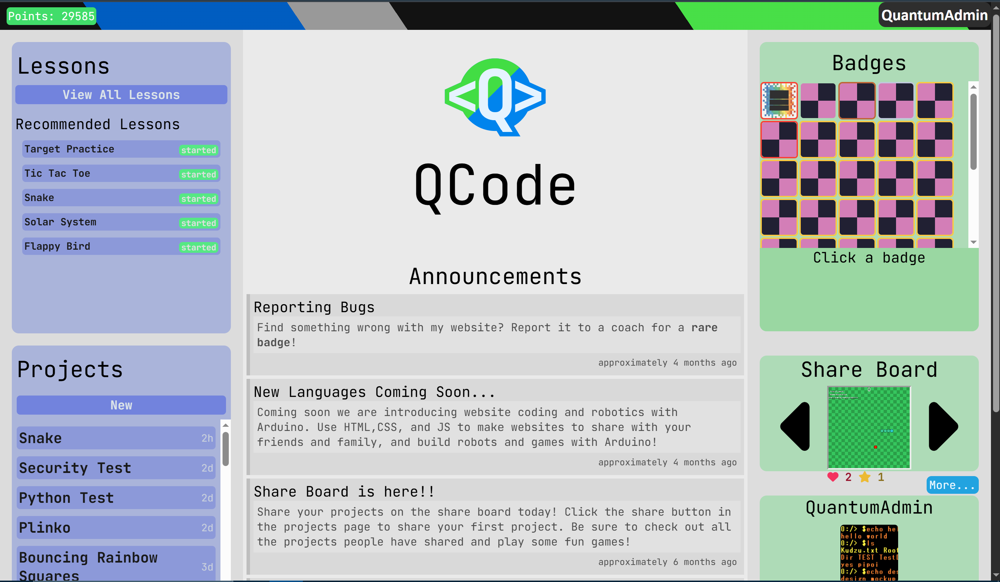

QCode Rewind
0.052224

Date: 05/22/24
Commits: 18
It may not look like much, but this is what started this whole project.
After one day of development, I had a broken panel system, placeholders for steps, and no homepage.
0.060124

Date: 06/01/24
Commits: 147
Once again, there were still a lot of things that needed changing.
Most noticeably, the homepage was looking pretty empty.
However, we did already have a working JS system in place, and user accounts.
If you want to log into this version,
you can use the login showcase@esporterz.com with the password: Test54321
V0.1.0
Date: 06/04/24
Commits: 190
This version was not long after the last one, but it included the ability to create projects for the first time and to have lessons load.
This was also the first time this project became known to Esporterz
V0.2.0

Date: 06/11/24
Commits: 380
This was the first version that was actually used by kids. We trialed this with four kids over the summer.
This version also gave a facelift to the homepage and added full lessons for the first time.
V0.2.1

Date: 06/16/24
Commits: 400
This was the first version that was actually used by kids. We trialed this with four kids over the summer.
This version also gave a facelift to the homepage and added full lessons for the first time.
V0.3.0
Date: 10/16/24
Commits: 485
This ones a little odd. At this point in time I wasn't releasing major updates like I do today.
This version was a bunch of small patches published over time. It was added as a release to mark the version before V0.4.0
I also consider this the "base" version of QCode. Also Paxton told me at some point that the website looked boring with all the grey,
so the iconic blue and green sidebars on the homepage are thanks to him.
V0.4.0
Date: 11/10/24
Commits: 635
This was the first major update I made for QCode. I never originally planned on adding a shared project feature, but kids kept asking for it.
V0.5.0
Date: 12/18/24
Commits: 795
Once again, released this update in the major update format I've been following. This one added the lesson chart system.
It was also around this time that Josh made a bunch of our foundational lessons.
And that's it!

Date: 5/22/25
Commits: 1,725
I'm not linking the most recent updates here (V0.6.0 and V0.7.0) as they are similar to how things look today. But if you want to check out the actual code for QCode and see the full version history you can click here.
Anyways, that's all we've done in the last year, and we have some fun stuff lined up for the next year of QCode